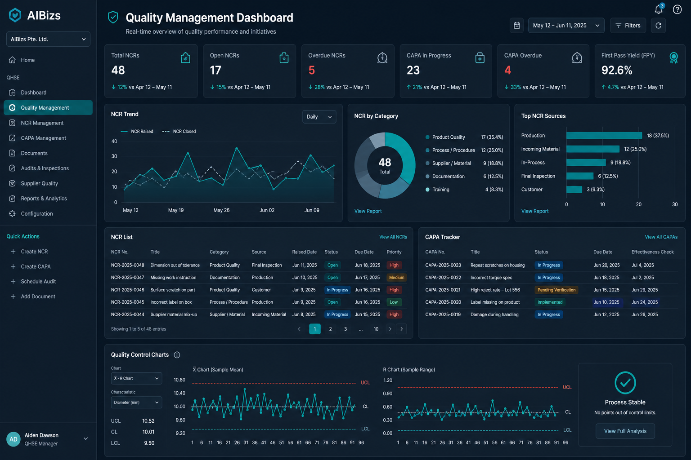

AIBizs QHSE
Hold Quality Standards Across Every Site
Manage quality control, non-conformances, and corrective actions in one QHSE platform — so industrial and corporate teams in Oman and the GCC keep product and process quality visible and auditable.

Stronger QC. Clear NCRs. Assurance that stands up to audit.
Quality Control Processes
Define QC checkpoints, inspection criteria, and acceptance standards so teams catch deviations early in production, construction, or service delivery.
- QC checkpoint definition
- Acceptance criteria and sampling
- In-process and final inspections
- Quality record retention
Quality Assurance Oversight
Give quality and HSE leadership visibility into open issues, audit findings, and assurance status across sites and contractors.
- QA audit and review tracking
- Site and contractor quality views
- Trend analysis on recurring issues
- Leadership quality KPIs


NCR & Corrective Action
Raise non-conformance reports, assign disposition, and drive CAPA to verified closure — keeping quality evidence ready for clients and ISO audits.
- NCR creation and classification
- Disposition and containment actions
- CAPA ownership and verification
- Client and audit-ready NCR history
Platform Capabilities
Everything you need to run quality management with control and clarity
End-to-End Process
A clear operating flow from setup to outcomes
Define
Set QC criteria and assurance checkpoints.
Inspect
Execute quality checks and record results.
Raise
Create NCRs for non-conformances.
Close
Complete CAPA and verify effectiveness.
Frequently Asked Questions
Ready to see Quality Management in action?
Speak with our team about configuring AIBizs QHSE for your organization in Oman and the GCC.